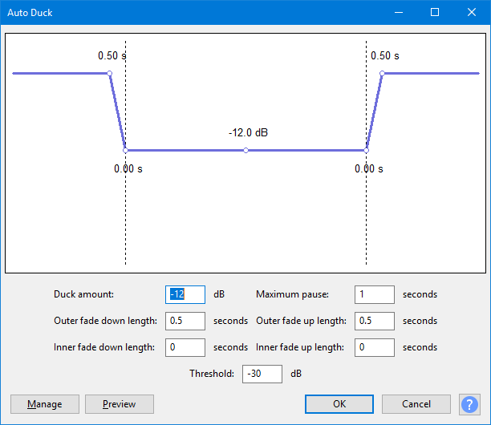

Auto Duck
The effect can be used to create voice-overs for podcasts or DJ sets, for automatic "ramping" of background music in radio productions and for turning down a voice in original language as soon as its translation kicks in.
- Accessed by:
- 
{kind=link}
Preparation
- Select the track(s) or region(s) whose volume you want to modify (for example, a background music track).
- Deselect the track that is to act as the control track (for example, a spoken commentary). Note that the first unselected track underneath the selected track(s) acts as the control track.
- Place the tracks so that at least one of the selected tracks to be modified is above the unselected control track. Any other tracks below the unselected control track will also be modified if they are selected. You can use the Audio Track Dropdown Menu to move tracks up or down if needed.
- The control track should be properly synchronized with the tracks to be "ducked" - you can use Time Shift Tool to align the tracks with each other as required.
- Choose "Auto Duck" from the Effect Menu.
Auto Duck analyzes the control track first of all, then applies the effect to the selected track(s). This second stage takes longer to complete than the first, so the estimated time remaining in the progress bar may be an underestimate until the later stages of processing.
Graph and Parameters
All the effect parameters can be set by inputting values in the boxes. The graph above the input boxes is a convenient visual representation of the changes made to the volume of the ducked track when Auto Duck takes effect. If preferred, you can modify the Duck amount and Fade Down and Fade Up lengths by dragging the "control points" (the small white circles) on the graph. Simply hover over a control point with the mouse and drag in the direction indicated by the cursor arrows.
- Duck Amount: The amount (default: -12 dB) of volume reduction in the selected track when a signal above the threshold level is detected
- Maximum Pause: Avoids over-rapid volume changes by setting a length of time following the ramp down that must be exceeded before the volume is ramped up again. The default value is 1 second, but irrespective of the setting, volume will not ramp up unless the pause is at least as long as the fade down length plus the fade up length.
- Fade Down Lengths: The length of time over which the selected tracks fade down to the ducked volume (default: 0.5 seconds).
- Fade Up Lengths: The length of time over which the selected tracks fade up from the ducked volume (default: 0.5 seconds)
- Threshold: The level (default: -30 dB) used for detecting a signal in the control track.
Buttons
Clicking on the command buttons give the following results:
- gives a dropdown menu enabling you to manage presets for the tool and to see some detail about the tool. For details see Manage presets.
- plays a short preview of what the audio would sound like if the effect is applied with the current settings, without making actual changes to the audio. The length of preview is determined by your setting in , the default setting is 6 seconds.
- applies the effect to the selected audio with the current effect settings.
- aborts the effect and leaves the audio unchanged.
 brings you to the appropriate page in the Manual, this page.
brings you to the appropriate page in the Manual, this page.